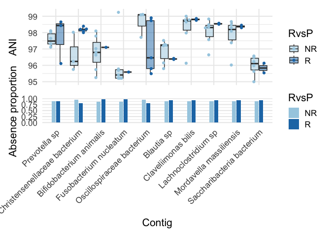
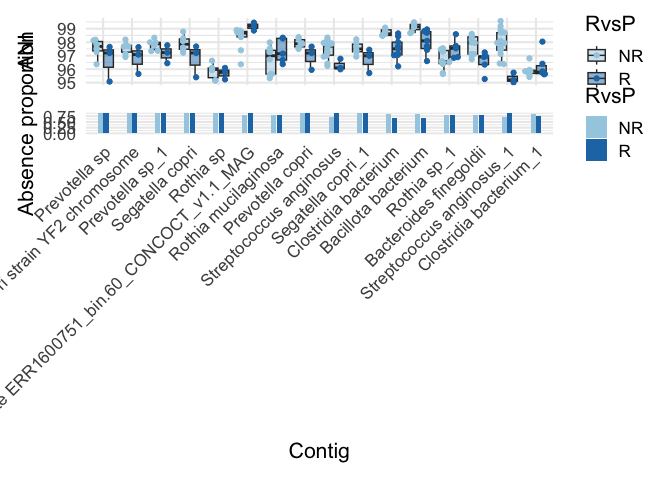
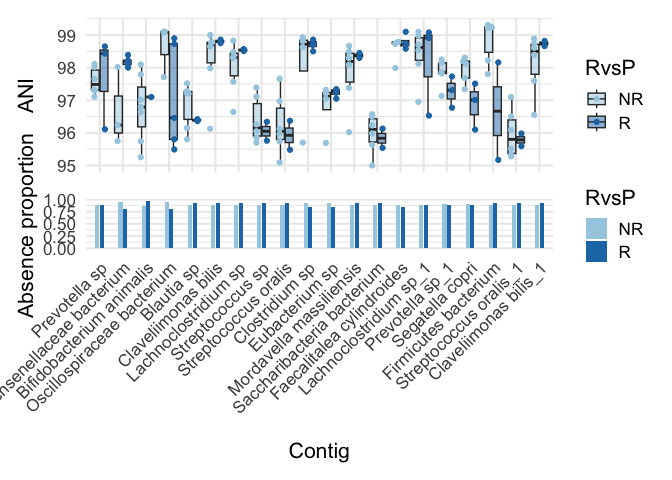
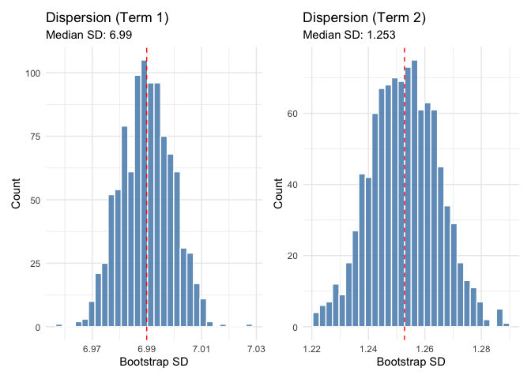
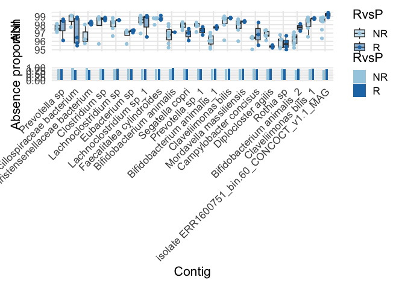
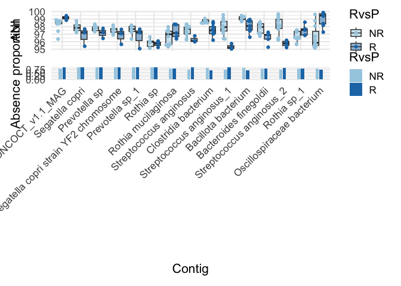
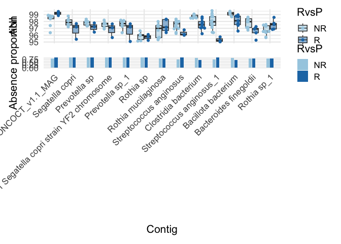
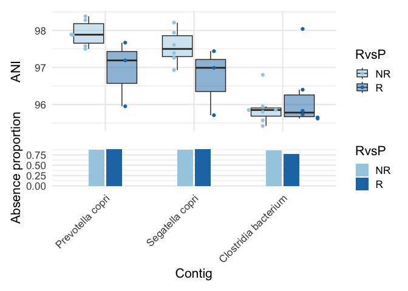
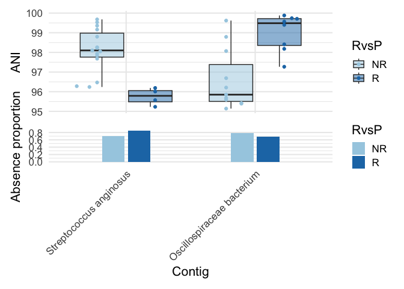

Re-analysing pancancer dataset with dispersion priors
2026-02-17
Load dependencies
library(strainspy)
library(SummarizedExperiment)
library(caret)
library(glmnet) # elastic net
library(ranger) # RF
library(pROC)
library(doParallel)
library(foreach)
library(parallel)
library(ggplot2)
library(tidyr)
library(dplyr)Load metadata
# WARNING! THIS INCLUDES UNPIBLISHED DATA
meta_path <- "./data/ash_pancancer/metadata_full.tsv"
meta <- read.csv(meta_path, sep = '\t')
meta = cbind(run_acc = meta$run_accession, meta)
# From paper:
# RvsP = CR or PR VS. PD or cPD - excluded patients with a BOR of stable disease (SD) (n=29)
# Outcome
meta$RvsP = "R"
meta$RvsP[which(meta$BOR == "PD" | meta$BOR == "cPD")] = "NR"
meta$RvsP = factor(meta$RvsP, levels = c("NR", "R"))Load sylph outputs
sy <- read_sylph("./data/ash_pancancer/combined_q_99.tsv.gz") # q99)## Detected Sylph query output file.# annoying renames to match meta V sylph file
colnames(sy) <- gsub("_1", "", colnames(sy))
colData(sy)$Sample_file <- gsub("_1", "", basename(colData(sy)$Sample_file))
# Reorder meta
meta = meta[match(colnames(sy), meta$run_accession), ]
# get rid of SD
rmidx = which(meta$BOR == "SD")
if(length(rmidx) > 0){
meta = meta[-rmidx, ]
sy = sy[, -rmidx]
}
sy <- filter_by_presence(sy, min_nonzero = 8) # filter at 10%## Retained 19139 rows after filteringdim(sy)## [1] 19139 77# Checks before merging metadata
all(colnames(sy) %in% meta$run_accession)## [1] TRUEall(meta$run_accession %in% colnames(sy))## [1] TRUEsy = modify_metadata(sy, meta)Empirical Bayes priors without dispersion term
design <- as.formula("~ RvsP + histology_cohort.x + age + sex + BMI")
save_path <- "output_rds/ASH_prior_analysis_zib_q_99_ebp.rds"
if(file.exists(save_path)){
ZB_fit <- readRDS(save_path)
} else {
ebp = compute_eb_priors(sy, design, nthreads = parallel::detectCores(), low_cutoff = 0,
high_cutoff = Inf)
# Run with weak prior for prediction
ZB_fit <- glmZiBFit(sy, design, nthreads = parallel::detectCores(), MAP_prior = ebp)
saveRDS(ZB_fit, save_path)
}There are 167 top hits, some of them dodgy
th = top_hits(ZB_fit) ## Found 167 tophits for RvsPR at alpha = 0.05 using holm# Looking at the first 10
plot_ani_dist(sy, 'RvsP', th$Contig_name[1:10]) ## Warning: Removed 689 rows containing non-finite outside the scale range
## (`stat_boxplot()`).
Clearly, at least B. animalis and F. nucleatum should not be picked…
Post-hoc testing
th_ph = estimate_effect_sizes(sy, ZB_fit, th)## | | | 0%
## Warning in finalizeTMB(TMBStruc, obj, fit, h, data.tmb.old): Model convergence
## problem; false convergence (8). See vignette('troubleshooting'),
## help('diagnose')
## | | | 1% | |= | 1% | |= | 2% | |== | 2% | |== | 3%
## Warning in finalizeTMB(TMBStruc, obj, fit, h, data.tmb.old): Model convergence
## problem; false convergence (8). See vignette('troubleshooting'),
## help('diagnose')
## | |=== | 4%
## Warning in finalizeTMB(TMBStruc, obj, fit, h, data.tmb.old): Model convergence
## problem; false convergence (8). See vignette('troubleshooting'),
## help('diagnose')
## | |=== | 5% | |==== | 5% | |==== | 6% | |===== | 7%
## Warning in finalizeTMB(TMBStruc, obj, fit, h, data.tmb.old): Model convergence
## problem; false convergence (8). See vignette('troubleshooting'),
## help('diagnose')
## | |===== | 8% | |====== | 8% | |====== | 9% | |======= | 10% | |======== | 11% | |======== | 12% | |========= | 13% | |========== | 14% | |========== | 15% | |=========== | 16%
## Warning in finalizeTMB(TMBStruc, obj, fit, h, data.tmb.old): Model convergence
## problem; false convergence (8). See vignette('troubleshooting'),
## help('diagnose')
## | |============ | 17% | |============= | 18% | |============= | 19% | |============== | 20% | |=============== | 21% | |=============== | 22% | |================ | 22% | |================ | 23%
## Warning in finalizeTMB(TMBStruc, obj, fit, h, data.tmb.old): Model convergence
## problem; false convergence (8). See vignette('troubleshooting'),
## help('diagnose')
## | |================= | 24% | |================= | 25% | |================== | 25% | |================== | 26% | |=================== | 27% | |=================== | 28% | |==================== | 28% | |==================== | 29% | |===================== | 29% | |===================== | 30% | |===================== | 31% | |====================== | 31% | |====================== | 32% | |======================= | 32% | |======================= | 33% | |======================= | 34% | |======================== | 34% | |======================== | 35% | |========================= | 35% | |========================= | 36% | |========================== | 37% | |========================== | 38% | |=========================== | 38% | |=========================== | 39% | |============================ | 40% | |============================= | 41% | |============================= | 42%
## Warning in finalizeTMB(TMBStruc, obj, fit, h, data.tmb.old): Model convergence
## problem; false convergence (8). See vignette('troubleshooting'),
## help('diagnose')
## | |============================== | 43% | |=============================== | 44% | |=============================== | 45% | |================================ | 46% | |================================= | 47% | |================================== | 48% | |================================== | 49% | |=================================== | 50% | |==================================== | 51% | |==================================== | 52% | |===================================== | 53% | |====================================== | 54%
## Warning in finalizeTMB(TMBStruc, obj, fit, h, data.tmb.old): Model convergence
## problem; false convergence (8). See vignette('troubleshooting'),
## help('diagnose')
## | |======================================= | 55% | |======================================= | 56% | |======================================== | 57% | |========================================= | 58% | |========================================= | 59% | |========================================== | 60% | |=========================================== | 61% | |=========================================== | 62% | |============================================ | 62% | |============================================ | 63% | |============================================= | 64% | |============================================= | 65% | |============================================== | 65% | |============================================== | 66% | |=============================================== | 66% | |=============================================== | 67% | |=============================================== | 68% | |================================================ | 68% | |================================================ | 69% | |================================================= | 69% | |================================================= | 70% | |================================================= | 71% | |================================================== | 71% | |================================================== | 72% | |=================================================== | 72% | |=================================================== | 73% | |==================================================== | 74% | |==================================================== | 75% | |===================================================== | 75% | |===================================================== | 76% | |====================================================== | 77% | |====================================================== | 78% | |======================================================= | 78% | |======================================================= | 79% | |======================================================== | 80% | |========================================================= | 81% | |========================================================= | 82% | |========================================================== | 83% | |=========================================================== | 84% | |============================================================ | 85% | |============================================================ | 86% | |============================================================= | 87% | |============================================================== | 88% | |============================================================== | 89% | |=============================================================== | 90% | |================================================================ | 91% | |================================================================ | 92% | |================================================================= | 92% | |================================================================= | 93% | |================================================================== | 94% | |================================================================== | 95% | |=================================================================== | 95% | |=================================================================== | 96% | |==================================================================== | 97% | |==================================================================== | 98% | |===================================================================== | 98% | |===================================================================== | 99% | |======================================================================| 99% | |======================================================================| 100%table(th_ph$Comment, useNA = 'always') # now there are only 16 hits##
## failed convergence
## 1
## failed convergence; too few nonzero
## 2
## failed convergence; too few nonzero; small effect
## 5
## small effect
## 41
## too few nonzero
## 54
## too few nonzero; small effect
## 48
## <NA>
## 16plot_ani_dist(sy, 'RvsP', th_ph$Contig_name[is.na(th_ph$Comment)]) ## Warning: Removed 1031 rows containing non-finite outside the scale range
## (`stat_boxplot()`).
Empirical Bayes prior with dispersion terms
Weak
save_path <- "output_rds/ASH_prior_analysis_zib_q_99_ebp_disp5.rds"
ebp = ZB_fit@priors # priors are the same
# manually add the dispersion parameter
ebp@priors_df = rbind(ebp@priors_df, data.frame(prior = 'normal(0,5)', class = 'fixef_disp', coef = 1))
ebp@priors_df## prior class coef
## 1 normal(0,0.27) fixef RvsPR
## 2 normal(0,0.35) fixef histology_cohort.xNEN
## 3 normal(0,0.32) fixef histology_cohort.xUGB
## 4 normal(0,0.18) fixef age
## 5 normal(0,0.34) fixef sexM
## 6 normal(0,0.12) fixef BMI
## 7 normal(0,1.55) fixef_zi RvsPR
## 8 normal(0,3.22) fixef_zi histology_cohort.xNEN
## 9 normal(0,2.65) fixef_zi histology_cohort.xUGB
## 10 normal(0,0.6) fixef_zi age
## 11 normal(0,2.11) fixef_zi sexM
## 12 normal(0,3.26) fixef_zi BMI
## 13 normal(0,5) fixef_disp 1if(file.exists(save_path)){
ZB_fit_d5 <- readRDS(save_path)
} else {
ZB_fit_d5 <- glmZiBFit(sy, design, nthreads = parallel::detectCores(), MAP_prior = ebp)
saveRDS(ZB_fit_d5, save_path)
}## | | | 0% | |= | 1% | |= | 2% | |== | 3% | |=== | 4% | |==== | 5% | |==== | 6% | |===== | 7% | |====== | 8% | |======= | 9% | |======= | 10% | |======== | 11% | |========= | 12% | |========= | 14% | |========== | 15% | |=========== | 16% | |============ | 17% | |============ | 18% | |============= | 19% | |============== | 20% | |=============== | 21% | |=============== | 22% | |================ | 23% | |================= | 24% | |================== | 25% | |================== | 26% | |=================== | 27% | |==================== | 28% | |==================== | 29% | |===================== | 30% | |====================== | 31% | |======================= | 32% | |======================= | 33% | |======================== | 34% | |========================= | 35% | |========================== | 36% | |========================== | 38% | |=========================== | 39% | |============================ | 40% | |============================ | 41% | |============================= | 42% | |============================== | 43% | |=============================== | 44% | |=============================== | 45% | |================================ | 46% | |================================= | 47% | |================================== | 48% | |================================== | 49% | |=================================== | 50% | |==================================== | 51% | |==================================== | 52% | |===================================== | 53% | |====================================== | 54% | |======================================= | 55% | |======================================= | 56% | |======================================== | 57% | |========================================= | 58% | |========================================== | 59% | |========================================== | 60% | |=========================================== | 61% | |============================================ | 62% | |============================================ | 64% | |============================================= | 65% | |============================================== | 66% | |=============================================== | 67% | |=============================================== | 68% | |================================================ | 69% | |================================================= | 70% | |================================================== | 71% | |================================================== | 72% | |=================================================== | 73% | |==================================================== | 74% | |==================================================== | 75% | |===================================================== | 76% | |====================================================== | 77% | |======================================================= | 78% | |======================================================= | 79% | |======================================================== | 80% | |========================================================= | 81% | |========================================================== | 82% | |========================================================== | 83% | |=========================================================== | 84% | |============================================================ | 85% | |============================================================= | 86% | |============================================================= | 88% | |============================================================== | 89% | |=============================================================== | 90% | |=============================================================== | 91% | |================================================================ | 92% | |================================================================= | 93% | |================================================================== | 94% | |================================================================== | 95% | |=================================================================== | 96% | |==================================================================== | 97% | |===================================================================== | 98% | |===================================================================== | 99% | |======================================================================| 100%
##
## Fitting model...th_d5 = top_hits(ZB_fit_d5)## Found 150 tophits for RvsPR at alpha = 0.05 using holmWe still have 150 top hits, prior is likely too weak. Sensitivity analysis:
plot_ani_dist(sy, 'RvsP', th_d5$Contig_name[1:20]) ## Warning: Removed 1376 rows containing non-finite outside the scale range
## (`stat_boxplot()`).
B. animalis is also still there…
Strong
save_path <- "output_rds/ASH_prior_analysis_zib_q_99_ebp_disp1.rds"
ebp = ZB_fit@priors # priors are the same
# manually add the dispersion parameter
ebp@priors_df = rbind(ebp@priors_df, data.frame(prior = 'normal(0,1)', class = 'fixef_disp', coef = 1))
ebp@priors_df## prior class coef
## 1 normal(0,0.27) fixef RvsPR
## 2 normal(0,0.35) fixef histology_cohort.xNEN
## 3 normal(0,0.32) fixef histology_cohort.xUGB
## 4 normal(0,0.18) fixef age
## 5 normal(0,0.34) fixef sexM
## 6 normal(0,0.12) fixef BMI
## 7 normal(0,1.55) fixef_zi RvsPR
## 8 normal(0,3.22) fixef_zi histology_cohort.xNEN
## 9 normal(0,2.65) fixef_zi histology_cohort.xUGB
## 10 normal(0,0.6) fixef_zi age
## 11 normal(0,2.11) fixef_zi sexM
## 12 normal(0,3.26) fixef_zi BMI
## 13 normal(0,1) fixef_disp 1if(file.exists(save_path)){
ZB_fit_d1 <- readRDS(save_path)
} else {
ZB_fit_d1 <- glmZiBFit(sy, design, nthreads = parallel::detectCores(), MAP_prior = ebp)
saveRDS(ZB_fit_d1, save_path)
}
th_d1 = top_hits(ZB_fit_d1)## Warning in top_hits(ZB_fit_d1): Multiple testing correction using `holm`: No
## significant associations detected for coef = 2 at alpha = 0.050000Now there are no hits. This has killed all signal. Let’s try with an empirical approach.
Ebp prior
save_path <- "output_rds/ASH_prior_analysis_zib_q_99_ebp_disp_ebp.rds"
ebp = compute_eb_priors(sy, design, nthreads = parallel::detectCores(), low_cutoff = 0,
high_cutoff = Inf, est_disperion_prior = T)## Computing fixef_zi priors...
## | | | 0% | |== | 3% | |==== | 5% | |===== | 8% | |======= | 10% | |========= | 13% | |=========== | 15% | |============= | 18% | |============== | 21% | |================ | 23% | |================== | 26% | |==================== | 28% | |====================== | 31% | |======================= | 33% | |========================= | 36% | |=========================== | 38% | |============================= | 41% | |=============================== | 44% | |================================ | 46% | |================================== | 49% | |==================================== | 51% | |====================================== | 54% | |======================================= | 56% | |========================================= | 59% | |=========================================== | 62% | |============================================= | 64% | |=============================================== | 67% | |================================================ | 69% | |================================================== | 72% | |==================================================== | 74% | |====================================================== | 77% | |======================================================== | 79% | |========================================================= | 82% | |=========================================================== | 85% | |============================================================= | 87% | |=============================================================== | 90% | |================================================================= | 92% | |================================================================== | 95% | |==================================================================== | 97% | |======================================================================| 100%
##
## | | | 0% | |========== | 14% | |==================== | 29% | |============================== | 43% | |======================================== | 57% | |================================================== | 71% | |============================================================ | 86% | |======================================================================| 100%
##
## Computing fixef priors...
## | | | 0% | |== | 3% | |==== | 5% | |===== | 8% | |======= | 10% | |========= | 13% | |=========== | 15% | |============= | 18% | |============== | 21% | |================ | 23% | |================== | 26% | |==================== | 28% | |====================== | 31% | |======================= | 33% | |========================= | 36% | |=========================== | 38% | |============================= | 41% | |=============================== | 44% | |================================ | 46% | |================================== | 49% | |==================================== | 51% | |====================================== | 54% | |======================================= | 56% | |========================================= | 59% | |=========================================== | 62% | |============================================= | 64% | |=============================================== | 67% | |================================================ | 69% | |================================================== | 72% | |==================================================== | 74% | |====================================================== | 77% | |======================================================== | 79% | |========================================================= | 82% | |=========================================================== | 85% | |============================================================= | 87% | |=============================================================== | 90% | |================================================================= | 92% | |================================================================== | 95% | |==================================================================== | 97% | |======================================================================| 100%
##
## | | | 0% | |========== | 14% | |==================== | 29% | |============================== | 43% | |======================================== | 57% | |================================================== | 71% | |============================================================ | 86% | |======================================================================| 100%plot_prior_bootstrap(ebp, 'dispersion')
ebp@priors_df## prior class coef
## 1 normal(0,0.27) fixef RvsPR
## 2 normal(0,0.35) fixef histology_cohort.xNEN
## 3 normal(0,0.32) fixef histology_cohort.xUGB
## 4 normal(0,0.18) fixef age
## 5 normal(0,0.34) fixef sexM
## 6 normal(0,0.12) fixef BMI
## 7 normal(0,1.55) fixef_zi RvsPR
## 8 normal(0,3.21) fixef_zi histology_cohort.xNEN
## 9 normal(0,2.65) fixef_zi histology_cohort.xUGB
## 10 normal(0,0.6) fixef_zi age
## 11 normal(0,2.11) fixef_zi sexM
## 12 normal(0,3.26) fixef_zi BMI
## 13 normal(6.99,1.25) fixef_disp 1if(file.exists(save_path)){
ZB_fit_d_ebp <- readRDS(save_path)
} else {
ZB_fit_d_ebp <- glmZiBFit(sy, design, nthreads = parallel::detectCores(), MAP_prior = ebp)
saveRDS(ZB_fit_d_ebp, save_path)
}## | | | 0% | |= | 1% | |= | 2% | |== | 3% | |=== | 4% | |==== | 5% | |==== | 6% | |===== | 7% | |====== | 8% | |======= | 9% | |======= | 10% | |======== | 11% | |========= | 12% | |========= | 14% | |========== | 15% | |=========== | 16% | |============ | 17% | |============ | 18% | |============= | 19% | |============== | 20% | |=============== | 21% | |=============== | 22% | |================ | 23% | |================= | 24% | |================== | 25% | |================== | 26% | |=================== | 27% | |==================== | 28% | |==================== | 29% | |===================== | 30% | |====================== | 31% | |======================= | 32% | |======================= | 33% | |======================== | 34% | |========================= | 35% | |========================== | 36% | |========================== | 38% | |=========================== | 39% | |============================ | 40% | |============================ | 41% | |============================= | 42% | |============================== | 43% | |=============================== | 44% | |=============================== | 45% | |================================ | 46% | |================================= | 47% | |================================== | 48% | |================================== | 49% | |=================================== | 50% | |==================================== | 51% | |==================================== | 52% | |===================================== | 53% | |====================================== | 54% | |======================================= | 55% | |======================================= | 56% | |======================================== | 57% | |========================================= | 58% | |========================================== | 59% | |========================================== | 60% | |=========================================== | 61% | |============================================ | 62% | |============================================ | 64% | |============================================= | 65% | |============================================== | 66% | |=============================================== | 67% | |=============================================== | 68% | |================================================ | 69% | |================================================= | 70% | |================================================== | 71% | |================================================== | 72% | |=================================================== | 73% | |==================================================== | 74% | |==================================================== | 75% | |===================================================== | 76% | |====================================================== | 77% | |======================================================= | 78% | |======================================================= | 79% | |======================================================== | 80% | |========================================================= | 81% | |========================================================== | 82% | |========================================================== | 83% | |=========================================================== | 84% | |============================================================ | 85% | |============================================================= | 86% | |============================================================= | 88% | |============================================================== | 89% | |=============================================================== | 90% | |=============================================================== | 91% | |================================================================ | 92% | |================================================================= | 93% | |================================================================== | 94% | |================================================================== | 95% | |=================================================================== | 96% | |==================================================================== | 97% | |===================================================================== | 98% | |===================================================================== | 99% | |======================================================================| 100%
##
## Fitting model...th_debp = top_hits(ZB_fit_d_ebp)## Found 97 tophits for RvsPR at alpha = 0.05 using holmDown to 97 hits…
plot_ani_dist(sy, 'RvsP', th_debp$Contig_name[1:20]) ## Warning: Removed 1367 rows containing non-finite outside the scale range
## (`stat_boxplot()`).
Not enough to kill B. animalis though…
Post-hoc testing
th_debp_ph = estimate_effect_sizes(sy, ZB_fit, th_debp)## | | | 0%
## Warning in finalizeTMB(TMBStruc, obj, fit, h, data.tmb.old): Model convergence
## problem; false convergence (8). See vignette('troubleshooting'),
## help('diagnose')
## | |= | 1% | |= | 2% | |== | 3% | |=== | 4%
## Warning in finalizeTMB(TMBStruc, obj, fit, h, data.tmb.old): Model convergence
## problem; false convergence (8). See vignette('troubleshooting'),
## help('diagnose')
## | |==== | 5% | |==== | 6% | |===== | 7% | |====== | 8% | |====== | 9% | |======= | 10% | |======== | 11% | |========= | 12% | |========= | 13% | |========== | 14% | |=========== | 15% | |============ | 16% | |============ | 18% | |============= | 19% | |============== | 20% | |============== | 21%
## Warning in finalizeTMB(TMBStruc, obj, fit, h, data.tmb.old): Model convergence
## problem; false convergence (8). See vignette('troubleshooting'),
## help('diagnose')
## | |=============== | 22% | |================ | 23% | |================= | 24% | |================= | 25% | |================== | 26% | |=================== | 27% | |=================== | 28% | |==================== | 29% | |===================== | 30% | |====================== | 31% | |====================== | 32% | |======================= | 33% | |======================== | 34% | |========================= | 35% | |========================= | 36% | |========================== | 37% | |=========================== | 38% | |=========================== | 39% | |============================ | 40% | |============================= | 41%
## Warning in finalizeTMB(TMBStruc, obj, fit, h, data.tmb.old): Model convergence
## problem; false convergence (8). See vignette('troubleshooting'),
## help('diagnose')
## | |============================== | 42% | |============================== | 43% | |=============================== | 44% | |================================ | 45% | |================================ | 46% | |================================= | 47% | |================================== | 48% | |=================================== | 49% | |=================================== | 51% | |==================================== | 52% | |===================================== | 53% | |====================================== | 54% | |====================================== | 55% | |======================================= | 56% | |======================================== | 57% | |======================================== | 58% | |========================================= | 59% | |========================================== | 60% | |=========================================== | 61% | |=========================================== | 62% | |============================================ | 63% | |============================================= | 64% | |============================================= | 65% | |============================================== | 66% | |=============================================== | 67% | |================================================ | 68% | |================================================ | 69% | |================================================= | 70% | |================================================== | 71% | |=================================================== | 72% | |=================================================== | 73% | |==================================================== | 74% | |===================================================== | 75% | |===================================================== | 76% | |====================================================== | 77% | |======================================================= | 78% | |======================================================== | 79% | |======================================================== | 80% | |========================================================= | 81% | |========================================================== | 82% | |========================================================== | 84% | |=========================================================== | 85% | |============================================================ | 86% | |============================================================= | 87% | |============================================================= | 88% | |============================================================== | 89% | |=============================================================== | 90% | |================================================================ | 91% | |================================================================ | 92% | |================================================================= | 93% | |================================================================== | 94% | |================================================================== | 95% | |=================================================================== | 96% | |==================================================================== | 97% | |===================================================================== | 98% | |===================================================================== | 99% | |======================================================================| 100%table(th_debp_ph$Comment, useNA = 'always') # now there are only 15 hits, one less from before##
## failed convergence
## 1
## failed convergence; too few nonzero
## 1
## failed convergence; too few nonzero; small effect
## 2
## small effect
## 21
## too few nonzero
## 35
## too few nonzero; small effect
## 22
## <NA>
## 15plot_ani_dist(sy, 'RvsP', th_debp_ph$Contig_name[is.na(th_debp_ph$Comment)]) ## Warning: Removed 947 rows containing non-finite outside the scale range
## (`stat_boxplot()`).
Common/different hits
disp_hits = th_debp_ph$Contig_name[is.na(th_debp_ph$Comment)]
ndisp_hits = th_ph$Contig_name[is.na(th_ph$Comment)]
# Common ones
plot_ani_dist(sy, 'RvsP', intersect(disp_hits,ndisp_hits))## Warning: Removed 831 rows containing non-finite outside the scale range
## (`stat_boxplot()`).
# Only in model without dispersion prior:
plot_ani_dist(sy, 'RvsP', setdiff(ndisp_hits, disp_hits))## Warning: Removed 200 rows containing non-finite outside the scale range
## (`stat_boxplot()`).
# Only in model WITH dispersion prior:
plot_ani_dist(sy, 'RvsP', setdiff(disp_hits, ndisp_hits))## Warning: Removed 116 rows containing non-finite outside the scale range
## (`stat_boxplot()`).